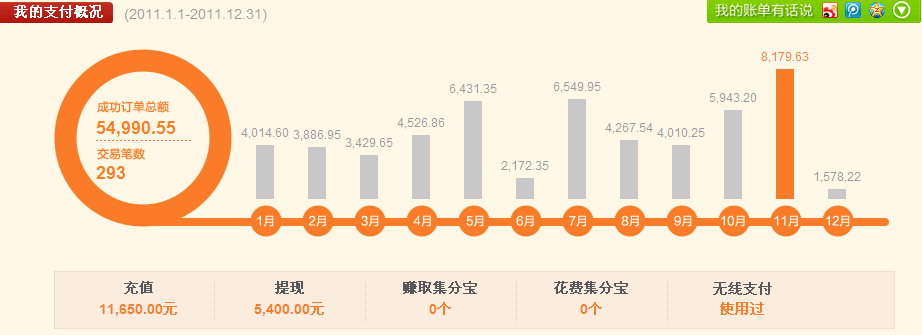
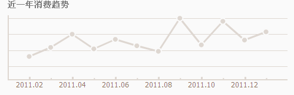

1 系统概述
网站群是由统一规划建设的若干个能够相互共享信息、按照一定的隶属关系组织在一起，既可以统一管理，也可以独立管理自成体系的网站集合。
中意JCMS是为建设网站群提供技术支持平台，可以全盘规划网站群、分步实施，实现统一规划，统一标准，分级管理，分级维护，耦合程度高，信息可以实现基于特定权限共享呈送的网站集合。进而实现标准化、规范化网站管理模式。
1.1 系统目标
既支持独立的网站创建，又支持横向、纵向的虚拟网站群建设，彻底解决了对内与对外、本地与异地、多部门与多网站之间的内容整合，加快了信息、内容、知识的积累和交换。
1.2 运行环境
[输入正文]
1.3 系统体系结构
内容管理系统是由系统设置、模板管理、栏目管理、信息管理、工作统计、扩展功能等六大模块组成。
如图：
1.4 系统工作流程
中意JCMS内容管理系统既要适用于实现独立网站的建设，又要支持横向、纵向的虚拟网站群和网站群的建设。以实现本地、异地信息共享、资源共享。
信息的生命周期一般包括：信息的采集、信息的审核、信息的发布、信息的过期。
信息的生命周期：
1.4.1 独立网站
建设独立网站是中意JCMS内容管理系统的最基本的功能。
当制作服务器和发布服务器在同一台电脑时。（这个简单，就不说明了）
当制作服务器和发布服务器在异地时，我们将使用FTP来传输静态界面（HTML）；具体是：
1、 管理人员在制作服务器段录入数据，审核数据。保持到数据库中并生成静态界面；
2、 通过FTP将静态界面复制到发布服务器上。动态数据则访问直接数据库读取。
3、
如下图：
1.4.2 虚拟网站群
虚拟的网站群是多个独立网站间实现信息共享、资源共享，又能独立管理，自成体系的网站集合。
如图：
1.4.3 网站群
当需要建立一个网站集群的时候，也通过中意JCMS平台来创建。系统也通过单点登录、统一管理和分开管理相结合的，多元化的管理模式
当一个用户登录中意JCMS平台，用户只能管理他能管理的站点和站点的栏目等。
如图：
1.5 系统技术架构
[输入正文]
1.6 系统安全架构
[输入正文]
2 系统功能需求
中意JCMS是为建设网站群提供技术支持平台，可以全盘规划网站群、分步实施，实现统一规划，统一标准，分级管理，分级维护，耦合程度高，信息可以实现基于特定权限共享呈送的网站集合。
2.1 系统设置
系统初始化数据的新建、修改的管理模块。它包含：网站群管理、机构设置、角色管理、用户设置、系统参数、系统帮助等功能
2.1.1 网站群管理
网站群管理包括以下几个部分：网站的新建、修改、注销、删除的功能。具体功能如下：
1) 新建
实现功能：创建一个新的网站，有管理员填写网站信息并保持，实现统一管理。
其中网站信息包括：网站的名称、域名、分类、行业、地区、部门、标准规范、创建
时间；
发布服务器发送设置：数据传输方式、服务器IP、端口等
2) 修改
实现功能：修改一个已经创建的网站信息。
3) 注销
实现功能：注销一个已经创建的网站信息。
4) 删除
实现功能：彻底删除一个已经创建的网站信息。
2.1.2 机构设置
机构设置包括以下几个部分：机构的新建、修改、注销、删除的功能。具体功能如下：
1) 新建
实现功能：创建一个机构，有管理员填写机构信息并保持，实现统一管理。
其中机构信息包括：机构的名称、上级机构、有效标记、机构描述；
2) 修改
实现功能：修改一个已经创建的机构信息。
3) 注销
实现功能：注销一个已经创建的机构信息。
4) 删除
实现功能：彻底删除一个已经创建的机构信息。
2.1.3 用户设置
用户设置包括以下几个部分：用户的新建、修改、注销、删除的功能。具体功能如下：
1) 新建
实现功能：创建一个用户，有管理员填写用户信息并保持，实现统一管理。
其中用户信息包括：用户的名称、登录名、登录密码、所属机构、有效标记，以及详细信息中；如：办公电话、移动电话、QQ、家庭电话、职务、Email等。
2) 修改
实现功能：修改一个已经创建的用户信息。
3) 注销
实现功能：注销一个已经创建的用户信息。
4) 删除
实现功能：彻底删除一个已经创建的用户信息。
2.1.4 角色设置
角色应该可以跨网站的管理：
第一：分配角色要管理的网站。
第二：分配角色对各网站管理的权限
角色设置包括以下几个部分：角色的新建、修改、注销、删除、权限分配的功能。具体功能如下：
1) 新建
实现功能：创建一个角色，有管理员填写角色信息并保持，实现统一管理。
其中角色信息包括：角色的名称、所属的网站、相关用户等。
相关用户：编辑具有这个角色的用户组。
2) 修改
实现功能：修改一个已经创建的角色信息。
3) 注销
实现功能：注销一个已经创建的角色信息。
4) 删除
实现功能：彻底删除一个已经创建的角色信息。
5) 权限分配
实现功能：把权限分为：菜单权限和栏目权限
应该形成如下树结构：
口 系统管理
口 机构设置
口 用户设置
口 角色设置
……
口 网站一
口 栏目管理
口 栏目一
口 信息新建
口 信息修改
口 信息审核
口 信息发布
口 栏目二
口 信息新建
口 信息修改
口 信息审核
口 信息发布
口 栏目三
口 信息新建
口 信息修改
口 信息审核
口 信息发布
口 网站二
口 栏目管理
口 栏目一
口 信息新建
口 信息修改
口 信息审核
口 信息发布
口 栏目二
口 信息新建
口 信息修改
口 信息审核
口 信息发布
2.1.5 系统参数
[输入正文]
2.1.6 系统帮助
[输入正文]
2.2 模板管理
[输入正文]
2.2.1 模板设置
模板设置包括以下几个部分：模板的上传、下载、删除、复制、预览。具体功能如下：
1) 新建
实现功能：创建一个模板，有管理员填写模板信息并保持，实现统一管理。
其中模板上传包括：模板名称、模板的排序、上传时间，有效标记等。
2) 修改
实现功能：修改一个已经创建的模板信息。
3) 注销
实现功能：注销一个已经创建的模板信息。
4) 预览
实现功能：预览一个已经创建的模板信息。
2.2.2 模板API
1、放置模板的使用说明
2.3 栏目管理
2.3.1 栏目管理
栏目设置包括以下几个部分：栏目的新建、修改、注销、删除、转移、合并、克隆、排序。具体功能如下：
1) 新建
实现功能：创建一个栏目，有管理员填写栏目信息并保持，实现统一管理。
其中栏目信息包括：栏目名称、栏目类型、栏目发布，栏目说明等。
栏目类型：普通栏目、审核栏目。
栏目发布：立即发布、手工发布、定时发布。
2) 修改
实现功能：修改一个已经创建的栏目信息。
3) 注销
实现功能：注销一个已经创建的栏目信息。
4) 删除
实现功能：彻底删除一个已经创建的栏目信息。
5) 转移
实现功能：将一个子栏目转移到另一个栏目下面。
6) 合并
实现功能：将两个栏目合并到两个栏目中的任何一个。
7) 克隆
实现功能：将一个栏目一模一样的复制一个，并选择是否一起复制栏目的内容。生成一个新的栏目。
8) 排序
实现功能：可以重新自定义栏目及子栏目的排列顺序。
注：栏目的隐藏属性
2.4 信息管理
[输入正文]
2.4.1 信息管理
注意：信息的生命周期
信息管理包括以下几个部分：信息新建、编辑、删除、预览、发布、克隆、转移。具体功能如下：
1) 新建
实现功能：添加一个新的内容，并且根据内容的属性来来显示。如果信息所在的栏目是审核栏目，则信息需要审核才生产静态界面，而且界面没有定时发布的功能。普通栏目则相反。内容添加的时候，可以选择根据栏目的栏目发布：立即发布、定时发布来判断。
信息发布的流程：
审核栏目：
如果是审核栏目的信息发布，新增一条栏目信息时，系统不生成静态界面，等待审核人员审核，当审核通过的时候，就直接生成静态界面。当信息审核不通过的时候，信息审核人员可以修改内容或者退回。
普通栏目：
如果是普通的栏目，栏目的发布方式分为：立即发布、手工发布、定时发布。
立即发布：是当内容新增完成后，系统自动的生成静态界面。
手工发布：是当内容新增完成后，人工手动的生成静态界面。
定时发布：是当内容新增完成后，等到发布时间才生成静态界面。
2.4.2 办公台
查看的工作任务。如待审核记录、已退回记录等
包括了信息的新增、编辑、预览、审核、发布，
时钟 天气预报等
2.5 工作统计
[输入正文]
2.5.1 群统计
[输入正文]
2.5.2 站内统计
[输入正文]
根据月份来统计信息发布量、点击数如图：
类似的图：

类似的图：

2.6 扩展功能
[输入正文]
2.6.1 短信邮箱
允许具有权限的人员使用
2.6.2 网上调查
[输入正文]
2.6.3 网上公告
[输入正文]
2.6.4 网上评论
2.6.5 资源库